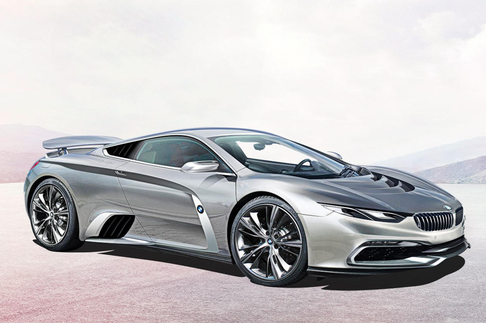

The BMW M8 is the high performance version of the BMW 8 Series (G15) marketed under the BMW M sub-brand. Introduced in June 2019, the M8 was initially produced in the 2-door convertible (F91 model code) and 2-door coupe (F92 model code) body styles.[1][2] A 4-door sedan (F93 model code, marketed as 'Gran Coupe') body style was added to the lineup in October 2019. The M8 is powered by the BMW S63 twin-turbocharged V8 engine shared with the BMW M5 (F90).
